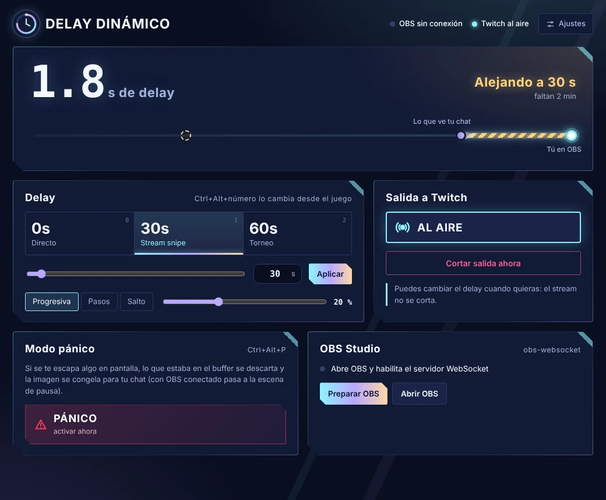
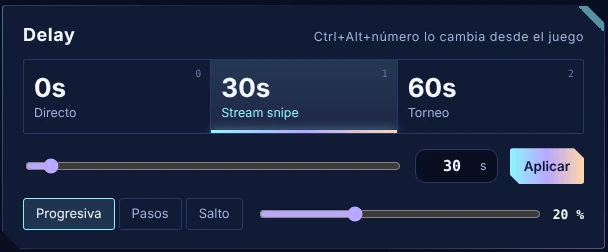
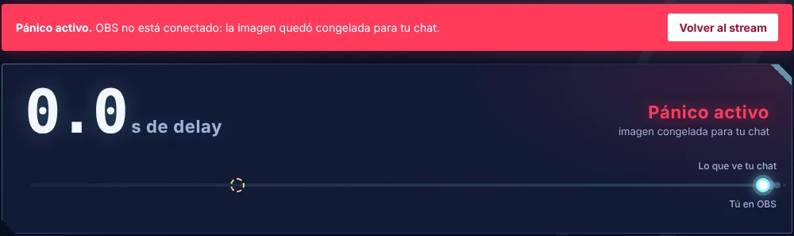

Delay Dinámico se pone entre OBS y Twitch. Sube el delay cuando entras a partida para que no te hagan stream snipe y bájalo en el lobby para hablar con tu chat en directo, todo en vivo y con un clic.

Pensada para streamers que juegan competitivo: control total del delay sin pausar la transmisión.
Usa uno de los presets o, si necesitas más tiempo, escribe exactamente cuántos segundos quieres: 45, 90, 180… hasta 10 minutos. En modo progresivo el stream se reproduce un poco más lento o más rápido hasta llegar al nuevo delay: tus viewers no ven congelamientos ni saltos.

¿Se te abrió un mensaje privado en pantalla? Con Ctrl+Alt+P lo que tu chat aún no vio se descarta y pasa a una escena de pausa. Nunca llega a Twitch.
Se conecta por WebSocket y deja OBS configurado sola. Crea la escena de pausa y puede iniciar la transmisión por ti.
Ctrl+Alt+0, 1 y 2 cambian el delay sin salir de la partida. Funcionan aunque el juego esté en pantalla completa.
No re-codifica tu video, así que casi no usa CPU. Vive junto al reloj de Windows y te avisa si algo falla.

Como tu stream va con delay, lo que acaba de pasar todavía no llegó a tu chat. El modo pánico lo borra antes de que salga y muestra tu escena de pausa. Al volver, OBS regresa a la escena en la que estabas y el delay se rearma solo.
No necesitas instalar Python ni nada más: todo viene incluido.
Baja el zip y extráelo en una carpeta fija, por ejemplo en Documentos.
Doble clic en Abrir Delay Dinamico. La primera vez descarga FFmpeg sola.
En Ajustes, tu clave de transmisión de Twitch y la contraseña del WebSocket de OBS.
Pulsa Preparar OBS y luego Iniciar. Desde ahí controlas el delay cuando quieras.
Requisitos: Windows 10 u 11 de 64 bits · OBS Studio 28 o superior · codificador H.264.
Descárgala gratis y configúrala en un par de minutos.
Delay Dinámico es gratis para uso personal. Si te sirve, puedes apoyar el proyecto ❤
Sí, completamente. Si te sirve y quieres apoyar el proyecto, puedes hacerlo con el botón de apoyo.
No toca ningún juego: solo recibe el video que OBS le envía y lo reenvía a Twitch con delay.
Solo en tu PC, en el archivo settings.json dentro de la carpeta de la app. La app no la envía a ningún lado salvo a Twitch. No compartas ese archivo.
El video sale exactamente como lo manda OBS, sin re-codificar. Solo el audio se procesa para que las transiciones progresivas suenen continuas.
Sí. Además de los presets, en el panel escribes los segundos exactos que quieras (por ejemplo 90 o 240) y pulsas Aplicar. Por defecto el máximo es de 10 minutos, y se puede subir en la configuración avanzada si lo necesitas.
El delay se guarda en la RAM: a 6 Mbps son unos 45 MB por cada minuto de delay.
Aparece con apps que no están firmadas. Haz clic en "Más información" y luego en "Ejecutar de todas formas".